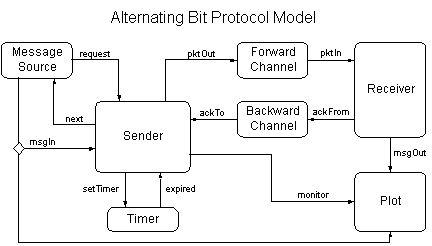
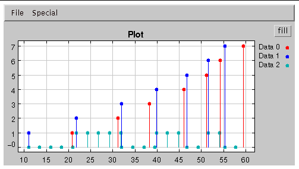

PtolemyII *charts Domain Demo
Protocol Modeling with Hierarchical FSM's and Discrete Event Model
Introduction
The discrete event (DE) model of computation is very popular in modeling
distributed or parallel hardware and software and their communication infrastructure
[1]. An important special case is the modeling of communication protocols.
A hardware or software implementation of any practical communication protocol
will go through a large number of states during its execution, so its behavior
can be very well captured using hierarchical FSM's. The example presented
here demonstrates the use of discrete event model and hierarchical FSM's
to model the alternating bit protocol (ABP). See [2] for a detailed discussion
of the protocol.
The Model
Top level
The alternating bit protocol is used for reliable transmission of data
between a sender and a receiver over an unreliable channel. The top level
configuration of the model is shown below. This top level block diagram
executes under the DE semantics.

The components
Message source. This is a DE atomic actor with a parameter MaxDelay.
After the simulation starts, it will wait for a random delay uniformly
distributed between 0 and MaxDelay, and then send a request
to the sender. When it receives a next from the sender, it will
again wait for a random delay uniformly distributed between 0 and
MaxDelay, and then send a new msgIn with sequence number
increased by 1 to the sender. In this demo, MaxDelay is set
to 0.5.
Timer. The timer has an input setTimer of type DoubleToken.
The value of the input token gives the delay before the next timer expire.
The timer is reset every time it gets an input token.
Channel. The channel models an unreliable connection in a packet
switching network. It queues the input packets, drops and delays the packets
randomly. A channel has three parameters: DropRate, MinDelay
and MaxDelay. DropRate is the probability that an input packet
gets dropped. Packet delay in the channel is uniformly distributed between
MinDelay and MaxDelay. In this demo, the forward channel
is configured as
DropRate = 0.3; MaxDelay = 5.0; MinDelay = 0.5.
The backward channel is configured as
DropRate = 0.2; MaxDelay = 2.0; MinDelay = 0.2.
Plot. The plot shows the result of data transmission. In the
plot, the red data gives the sequence number of the messages coming out
from the receiver. The blue data gives the sequence number of the messages
going to the sender. The third data is the "alternating bit" that the protocol
uses to number the packets going through the channel.
Sender. The sender implements the sending part of ABP and is
a hierarchical FSM as shown below.

Receiver. The receiver is a flat FSM as shown below.

Run the Demo
cd $PTII/ptolemy/domains/sc/demo/ABP
setenv CLASSPATH $PTII
java ptolemy.domains.sc.demo.ABP.ABP
Sample Result
A sample result of running the demo is shown below.

Discussion
The purpose of this demo is to show:
-
Hierarchical FSM's can efficiently capture complex sequential control behavior.
-
Embedding FSM's within other models of computation is a clean and flexible
way to model the cuncurrent execution of FSM's.
References
-
A. Girault, B. Lee, and E. A. Lee, ``Hierarchical
Finite State Machines with Multiple Concurrency Models,'' April 13,
1998.
-
J. Walrand, and P. Varaiya, ``High-Performance Communication Networks,''
pages 69-72, Morgan Kaufmann Publishers, Inc., 1996.
Copyright © 1998 The Regents of the University of California.
All rights reserved.
Last updated: $Date$.
Send comments and suggestions to: ptII@eecs.berkeley.edu